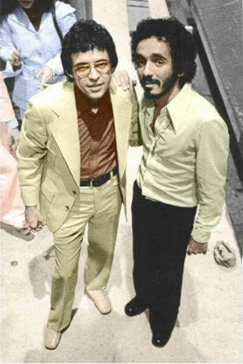
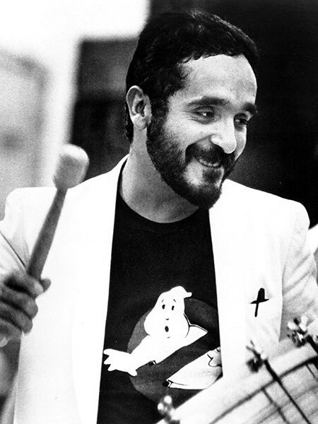
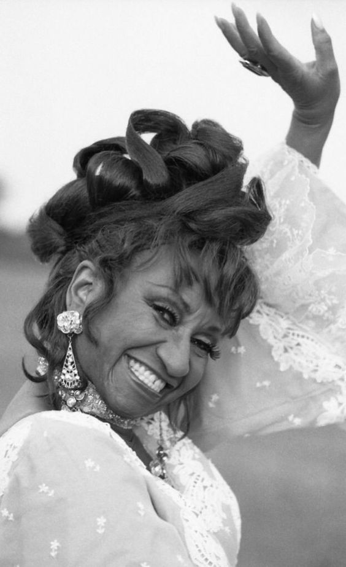

Hector Lavoe conoci como el cantante de los cantantes a tenido unos de las mejores salsas Unos de los mas conocidos es "El cantante,La vida es bonita,Triste y Vacia".
Hector Lavoe Nacio el 30 de septiembre de 1946 en el barrio Machuelo Abajo de la cantera de Ponce,Puerto Rico y murio el 29 de junio de 1993 En el hospital St.Clare's Hospital.
Hector Lavoe formo del grupo de All-star o reyes de la salsa conformados por.
Hector siendo el mejor de los cantantes de la salsa nunca se creyo mayor a todos aveces solia cantar con su mejor amigo y compañero Willie Colon ellos dos formaron la cancion de "Triste y vacia,Sigue Feliz,Se baila mejor,Calle luna Calle sol entres otros" Sin duda Los dos formaban un duo muy especial en la salsa siendo sus temas al dia de hoy siendo escuchados por la gente

Willie Colon es un cantante,compositor y musico de estadounidos de origen puertorriqueño por algunos como el arquitecto de la salsa
Willie Colon Nacio el 28 de abril de 1950 en South Bronx,Nueva rork,Estadosunidos y al dia de hoy Willie sigue vivo
Willie Colon formo de los all-star o reyes de la salsa
Willie Colon conformo las canciones (Casanova,Oh que sera?,El gran varon y Corazon guerrero)
Willie Colon fue muy buen amigo de Hector Lavoe y Celia Cruz
Willie Colon fue criado por su abuela y tia quienes desde pequeño lo nutrieron de música tradicional puertorriqueña y de los ritmos típicos del repertorio latinoamericano como el son cubano y el tango.

Celiz Cruz conocida como (La reina de la salsa o la guarachera de cuba) es ampliamente considerada unas de las artistas latinas mas populares
tambien Celia fue importante del siglo XX y un icono de la musica latina
Celia Cruz nacio en 21 de octubre de 1925,La Habana,Cuba y fallecio el 16 de julio de 2003 en Fort Lee,Nueva jersey,Estados unidos
Celia Cruz tambien conformo los all-star o reyes de la salsa
Celia Cruz conformo las canciones (la negra tiene tumbao,la vida es un carnaval,yo vivire,te busco y Quimbara
Los mejores amigos de Celiz Cruz fue Willie Colon y compañero muy querido por ella
Durante su carrera, Celia creó más de setenta álbumes, pero sus logros van mucho más allá que la música Celia ganó tres doctorados
Celia aparecio en una pelicula llamada "Los reyes del Mambo" en 1992 y tambien en "La familia Perez" en 1995

La historia se remonta a mediados del siglo XX cuando los ritmos cubanos cruzaron el Caribe y llegaron a Cali. Desde entonces la salsa caleña fue arraigándose hasta convertirse en un sello que ha dado a conocer agrupaciones, cantantes y bailarines
All star o reyes de la salsa es un grupo de los mejores cantantes de salsa siendo ellos muy conocidos en el mundo de la salsa tambien teniendo reconocimiento mundial.
los 3 mejores reyes de salsa fueron
-Frankie Ruiz -Willie Colon -Hector Lavoe
Claro tambien hay mas reyes los cuales fueron:
-Ruben Blades -Celia Cruz -Ismael Rivera -Ismael Quintana -Willie Rosario